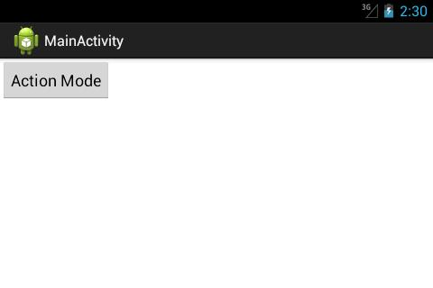
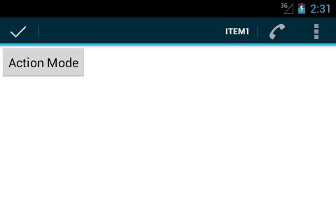
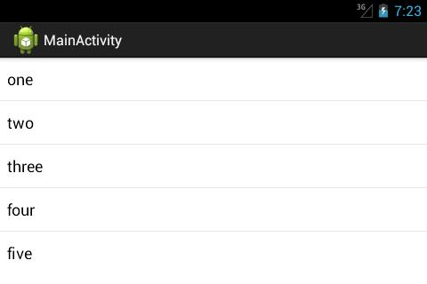
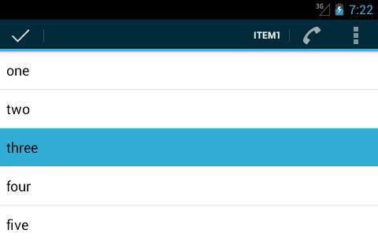
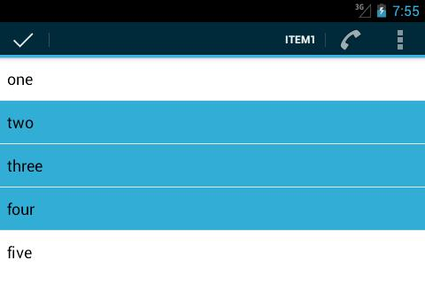

В этом уроке:
- работаем с ActionMode
Рассмотренный нами в прошлых уроках ActionBar – это альтернатива обычному меню прошлых версий. В третьей версии Андроида появилась также альтернатива и контекстному меню - ActionMode. Посмотрим, как его можно использовать.
Создадим проект:
Project name: P1131_ActionMode
Build Target: Android 4.1
Application name: ActionMode
Package name: ru.startandroid.develop.p1131actionmode
Create Activity: MainActivity
Добавим строки в strings.xml:
<string name="action_mode">Action Mode</string>
<string name="item1">Item1</string>
<string name="item2">Item2</string>
<string name="item3">Item3</string>
<string name="item4">Item4</string>main.xml:
<?xml version="1.0" encoding="utf-8"?>
<LinearLayout
xmlns:android="http://schemas.android.com/apk/res/android"
xmlns:tools="http://schemas.android.com/tools"
android:id="@+id/LinearLayout1"
android:layout_width="match_parent"
android:layout_height="match_parent"
android:orientation="vertical">
<Button
android:id="@+id/btnActionMode"
android:layout_width="wrap_content"
android:layout_height="wrap_content"
android:onClick="onClick"
android:text="@string/action_mode">
</Button>
</LinearLayout>Одна кнопка, по нажатию на которую будем показывать/скрывать ActionMode
Пункты меню, res/menu/context.xml:
<?xml version="1.0" encoding="utf-8"?>
<menu
xmlns:android="http://schemas.android.com/apk/res/android">
<item
android:id="@+id/item1"
android:showAsAction="always"
android:title="@string/item1">
</item>
<item
android:id="@+id/item2"
android:icon="@android:drawable/ic_menu_call"
android:showAsAction="ifRoom"
android:title="@string/item2">
</item>
<item
android:id="@+id/item3"
android:icon="@android:drawable/ic_menu_info_details"
android:showAsAction="ifRoom|withText"
android:title="@string/item3">
</item>
<item
android:id="@+id/item4"
android:icon="@android:drawable/ic_menu_view"
android:showAsAction="never"
android:title="@string/item4">
</item>
</menu>Те же пункты, что мы использовали для примеров с ActionBar. Их будет отображать ActionMode.
MainActivity.java:
package ru.startandroid.develop.p1131actionmode;
import android.app.Activity;
import android.os.Bundle;
import android.util.Log;
import android.view.ActionMode;
import android.view.Menu;
import android.view.MenuItem;
import android.view.View;
public class MainActivity extends Activity {
ActionMode actionMode;
final String LOG_TAG = "myLogs";
public void onCreate(Bundle savedInstanceState) {
super.onCreate(savedInstanceState);
setContentView(R.layout.main);
}
public boolean onCreateOptionsMenu(Menu menu) {
getMenuInflater().inflate(R.menu.main, menu);
return true;
}
public void onClick(View v) {
if (actionMode == null)
actionMode = startActionMode(callback);
else
actionMode.finish();
}
private ActionMode.Callback callback = new ActionMode.Callback() {
public boolean onCreateActionMode(ActionMode mode, Menu menu) {
mode.getMenuInflater().inflate(R.menu.context, menu);
return true;
}
public boolean onPrepareActionMode(ActionMode mode, Menu menu) {
return false;
}
public boolean onActionItemClicked(ActionMode mode, MenuItem item) {
Log.d(LOG_TAG, "item " + item.getTitle());
return false;
}
public void onDestroyActionMode(ActionMode mode) {
Log.d(LOG_TAG, "destroy");
actionMode = null;
}
};
}Чтобы вызвать ActionMode, используется метод startActionMode. На вход он берет объект callback, который будет обрабатывать все события, связанные с ActionMode. На выходе получаем объект ActionMode.
В методе onClick мы проверяем, если ActionMode еще не был вызван, то вызываем. Иначе – убираем его с помощью его же метода finish.
Объект callback реализует интерфейс ActionMode.Callback. Его методы:
onCreateActionMode – вызывается при создании ActionMode. Возвращаем true, если ActionMode можно создавать. Здесь мы наполняем ActionMode пунктами меню (через объект Menu).
onPrepareActionMode – вызывается при обновлении ActionMode. Например, в случае вызова метода invalidate. Возвращаем true, если ActionMode можно обновить.
onActionItemClicked – обработка нажатия на какой-либо пункт ActionMode. Будем выводить в лог текст нажатого пункта.
onDestroyActionMode – вызывается при закрытии ActionMode. Пишем лог и обнуляем переменную actionMode, чтобы в onClick (см.выше) у нас работала проверка (actionMode == null).
Все сохраняем, запускаем. Я включу горизонтальную ориентацию, чтобы лучше были видны пункты ActionMode.

Жмем кнопку, появляется ActionMode

Располагается он там же, где и ActionBar. Да и выглядит также, только слева у него кнопка закрытия. Пункты меню видны так, как мы описывали в файле context.xml.
Нажмем, например, на Item1, смотрим лог.
item Item1
Сработал метод onActionItemClicked.
Закрыть ActionMode мы теперь можем снова нажав кнопку Action Mode, либо нажав на галку в левой части, либо нажав кнопку Назад. Во всех этих случаях будет выполнен метод onDestroyActionMode. Опробуйте эти способы и смотрите логи, там должна появиться строка:
destroy
Мы рассмотрели способ ручного вызова ActionMode, обрабатывая нажатие на кнопку. Т.к. ActionMode позиционируется как замена контекстному меню, то вполне можно повесить его вызов на долгое нажатие на какой-либо элемент экрана. Чтобы обработать долгое нажатие надо вызывать для элемента метод setOnLongClickListener, передать туда объект, реализующий интерфейс OnLongClickListener, и в методе onLongClick этого объекта написать вызов ActionMode.
Для некоторых элементов вызов ActionMode по долгому нажатию уже реализован. Это наследники класса AbsListView, например GridView и ListView. Попробуем на ListView, как это работает.
Меняем main.xml:
<?xml version="1.0" encoding="utf-8"?>
<LinearLayout
xmlns:android="http://schemas.android.com/apk/res/android"
xmlns:tools="http://schemas.android.com/tools"
android:id="@+id/LinearLayout1"
android:layout_width="match_parent"
android:layout_height="match_parent"
android:orientation="vertical">
<ListView
android:id="@+id/lvActionMode"
android:layout_width="match_parent"
android:layout_height="wrap_content">
</ListView>
</LinearLayout>На экране будет только список.
Меняем MainActivity.java:
package ru.startandroid.develop.p1131actionmode;
import android.app.Activity;
import android.os.Bundle;
import android.util.Log;
import android.view.ActionMode;
import android.view.Menu;
import android.view.MenuItem;
import android.widget.AbsListView.MultiChoiceModeListener;
import android.widget.ArrayAdapter;
import android.widget.ListView;
public class MainActivity extends Activity {
ActionMode actionMode;
ListView lvActionMode;
final String LOG_TAG = "myLogs";
String[] data = { "one", "two", "three", "four", "five" };
public void onCreate(Bundle savedInstanceState) {
super.onCreate(savedInstanceState);
setContentView(R.layout.main);
ArrayAdapter<String> adapter = new ArrayAdapter<String>(this,
android.R.layout.simple_list_item_activated_1, data);
lvActionMode = (ListView) findViewById(R.id.lvActionMode);
lvActionMode.setAdapter(adapter);
lvActionMode.setChoiceMode(ListView.CHOICE_MODE_MULTIPLE_MODAL);
lvActionMode.setMultiChoiceModeListener(new MultiChoiceModeListener() {
public boolean onCreateActionMode(ActionMode mode, Menu menu) {
mode.getMenuInflater().inflate(R.menu.context, menu);
return true;
}
public boolean onPrepareActionMode(ActionMode mode, Menu menu) {
return false;
}
public boolean onActionItemClicked(ActionMode mode, MenuItem item) {
mode.finish();
return false;
}
public void onDestroyActionMode(ActionMode mode) {
}
public void onItemCheckedStateChanged(ActionMode mode,
int position, long id, boolean checked) {
Log.d(LOG_TAG, "position = " + position + ", checked = "
+ checked);
}
});
}
public boolean onCreateOptionsMenu(Menu menu) {
getMenuInflater().inflate(R.menu.main, menu);
return true;
}
}В onCreate мы создаем адаптер и присваиваем его списку. Далее для списка мы включаем режим выбора (Урок 43) CHOICE_MODE_MULTIPLE_MODAL (появившийся в API Level 11) и устанавливаем объект обработчик, реализующий AbsListView.MultiChoiceModeListener. Методы здесь все те же, что и ранее нами рассмотренные в ActionMode.Callback, плюс добавляется один – onItemCheckedStateChanged, в котором мы получаем инфу о выделенных пунктах списка. Т.е. этот обработчик и выделение пунктов списка отслеживает и ActionMode контролирует.
В onCreateActionMode мы указываем, из какого файла брать пункты меню, в onActionItemClicked закрываем ActionMode независимо от того, какой пункт меню был выбран, а в onItemCheckedStateChanged просто выводим в лог инфу о выбираемых пунктах списка. Остальные методы не трогаем, сейчас они не нужны.
Все сохраняем и запускаем приложение.

Долгое нажатие на какой-либо пункт списка вызовет ActionMode

А в логах появится инфа о выбранном пункте:
position = 2, checked = true
Теперь мы можем дальше простыми нажатиями выбирать и «развыбирать» пункты списка

и после этого нажать на какой-либо пункт ActionMode для операции над группой выделенных пунктов. Получить список выбранных пунктов можно так же, как в Уроке 43 для множественного выбора.
Как нам теперь закрыть ActionMode?
- кнопка отмены (слева)
- кнопка Назад
- любой пункт в ActionMode, т.к. мы повесили вызов метода finish в onActionItemClicked
При закрытии ActionMode «развыделятся» и все выделенные пункты.
Еще, как вариант закрытия ActionMode, – это не оставить ни одного выделенного пункта. Если в процессе выделения пунктов не останется ни одного выделенного, то ActionMode закроется.
Для списка в режиме CHOICE_MODE_MULTIPLE_MODAL есть еще один способ, кроме долгого нажатия на пункт, вызвать ActionMode. Это метод setItemChecked. Если выделить этим методом какой-либо пункт, то ActionMode появится.
У ActionMode, как и у ActionBar есть методы:
setTitle - установить свой заголовок
setSubtitle - установить свой подзаголовок